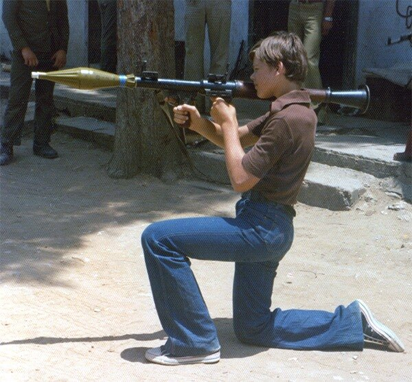
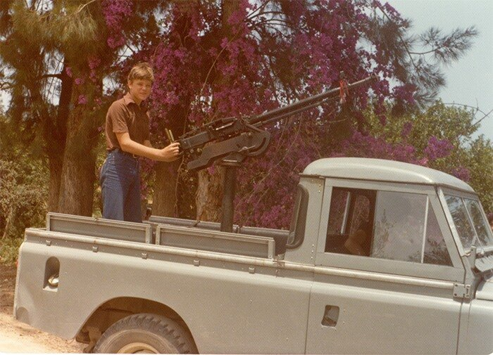

«Напоследок пришло время ехать на фрегат. Я поехал и приготовил все нужное по моей должности. Ожидаем прибытия государя. Появился плывущий на гребле катер, на котором сидел он с императрицею и великими князьями. Ветр дул свежий и холодный; к тому ж нашла туча, и полился проливной дождь. Надлежало быть на верху в одних мундирах. Всего меня смочило; я весь дрожал от холода. Ну! думал я, малейшей простуды опасавшийся, — это положит меня в постелю. Однакож, благодарю Бога! ничего со мною не сделалось, кроме что на другой день показалась на лице моем некоторая сыпь с болячками, которые скоро зажили. Государь весьма весел взошел на фрегат и хотя, также как и мы, весь обмок, — но стал шутить с нами и, пожимаясь, говорил: — „Мне кажется, дождик накрапывает.» — Между тем, увидя меня, милостиво сказал мне: — „Поди, поди на-низ: ты болен, — простудишься." — Сообщество наше умножилось прибывшими с государем докладчиками и другими приближенными особами. Императрицу сопровождала Екатерина Ивановна Нелидова. Долгое время дувший с моря ветр препятствовал нам сняться с якоря.
В первые дни, великие князья Александр Павлович и Константин Павлович, смотря на Кронштадт, на корабли и на построенные на воде, для защиты рейда, две крепости — Кроншлот и Цитадель, как на новые для них предметы, любопытствовали узнать обо всем. Они поймали молодого на фрегате мичмана (младшего офицера) и делали ему разные о том вопросы. Я подслушал однажды разговор их, и он показался мне так достопримечателен, что я сохранил его в моей памяти. Указывая на крепости, они спросили у него: в которую из них сажают арестованных офицеров? — Мичман, удивясь их вопросу и как бы оскорбясь им, отвечал с великою смелостью: — „Что?! .... Офицеров сажать под караул в крепость?! ... Да этого никогда не бывало, и я впервые о том слышу." — Так велико было, во времена Екатерины, честолюбие в самых юных офицерах! Тот же мичман, видел я, смотрел с насмешливою улыбкою, когда великие князья с важным видом брали ружья и, как солдаты, при всех учились отрывисто и проворно делать ими на-караул, на-плечо, к ноге, и проч.»
Адмирал А.С.Шишков не любил Павла. (Может поэтому эти его записки так долго не публиковались. Говорят, их публикации якобы препятствовал Николай I, который не хотел, чтобы они увидели свет при жизни московского митрополита Филарета. Но только ли в митрополите дело?). Поэтому везде, где было можно, Шишков старался выказать Павла в дурном свете. Вот и здесь, казалось бы что в том, что дети ружьями забавляются. Мой одиннадцатилетний сын, когда приходилось выезжать нам вместе в места не столь известные, с превеликим желанием стремился прикоснуться к оружию. Мужчины любят оружие, и никуда от этого не деться. Это у них в крови.


И все же Шишков, говоря о великих князьях, не преминул упомянуть при этом мнение столь любезной ему Екатерины, которая требовала под благовидным предлогом отводить внуков от подобных упражнений. Екатерина считала, что наследнику престола нужнее «обучаться править царством, нежели предаваться страсти самому обучать солдат красивому ружьеметанию.»
(Кстати сказать. Почитали бы об этом наши верховные военачальники, любители плац-парадов («красивого ружьеметания»), так популярных в последнее время.)
Ну вот, совсем уже ушли в сторону. Вернемся к запискам Шишкова.
«Стоянка наша на одном месте, в ожидании благополучного ветра, наводила нам скуку. Дмитрий Прокофьевич Трощинский, судя по образу мыслей Екатерины, любившей чтоб всем при ней было свободно и весело, вздумал было, для препровождения времени, заняться карточною игрою; но едва сели мы играть в вист, как сверху прислано было нам сказать, чтобы мы от подобных забав воздержались. Между тем, хотя в совершенной праздности не предстояло никаких дел, однакож император показывал вид деятельной заботливости: он не только по утру и вечеру часто, но даже и во время обеда, вставая неоднократно из за стола, выходил на верх, как будто для каких-либо нужных распоряжений или обозрений. Я сначала выходил всегда за ним ; но после, видя что он ничего не приказывает, вздумал было однажды остаться за столом; но императрица, взглянув на меня, сделала мне головою знак, чтоб я шел за ним. Я вскочил, бросился с поспешностью, и с тех пор наблюдал все его движения, стараясь всегда быть на верху, когда он выйдет из каюты. Нередко, чтоб перед рядовыми служителями показать себя занимающимся делами, по утрам хаживал он на бак (возвышенный в носу корабля не большой помост) и там, в тесноте, посреди шума работающих вокруг него матросов, выслушивал читаемые перед ним докладные бумаги. Можно себе представить, что решения по оным не могли с должным вниманием быть обдуманы.»
Продолжим завтра, даст бог.